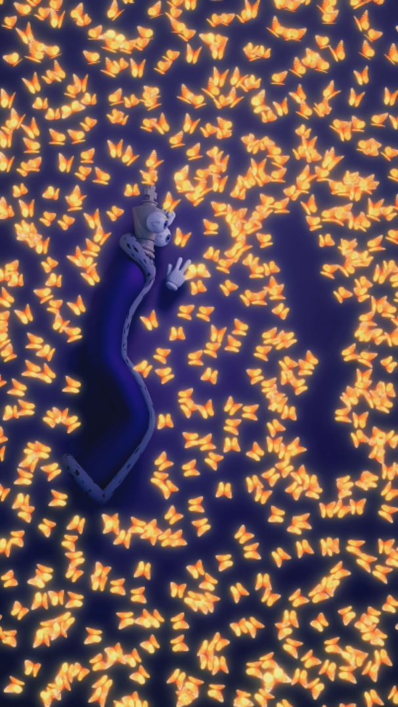
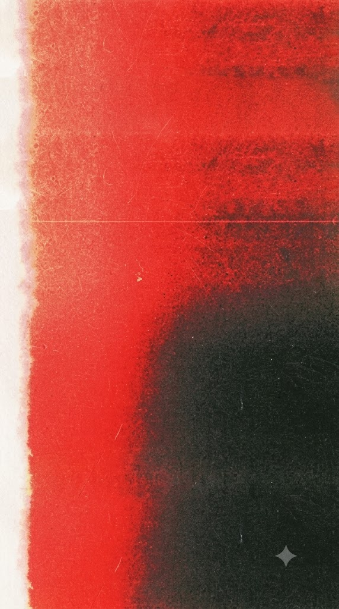

Ame, pocas veces me imaginé esto y quiero expresártelo, de una manera en la que se… Esto sigue… Llevo poco tiempo de conocerte y en ese tiempo me pude dar cuenta de lo increíble persona que eres. Mi amor por ti se despertó pronto, quizá fue suerte o coincidencia.
Qué lindo fue conocerte. El saber quién eras, más allá de lo que me contaban amigos y profes, fue algo revelador y cautivador. Eres un ser tan lindo, adorable e inteligente que me sigue costando entender el lugar que tengo. Me cautivó tu simpleza, gusto por el arte y quien eres. Descubrí que eres más que mi rival en clases de dibujo, eres una persona que podía llegar a amar y no arrepentirme. Genuinamente tenía miedo, no quize perderte, así que hice algo de lo que no me arrepiento. Esa petición fue algo más que solo palabras; mi amor por ti quedó claro y magnificado. Ame, no puedo decir otra cosa más que Te amo. Eres la mujer más linda que conozco, me siento muy feliz de ser tu novio.

Ame, te mereces todo lo que tú quieras. Me veo limitado, y si fuera por mí te daba todo un universo de cosas. Quisiera ver por siempre el universo que guardan tus ojos, sentir el calor que derrama tu cuerpo, y dormir sobre tu suave y reconfortante cuerpo. Eres una mujer hermosa, tan linda como la luna y las estrellas; no tengo las suficientes palabras para terminar de describir lo mucho que te quiero y que te voy a seguir amando.
Te amo, América. Eres muchísimo para mí <3
Nmms, descubriste un easter egg (⌐'□')⌐ Válido por una comida o lo que quieras hacerme.
*Aplica restricciones (la noche no)